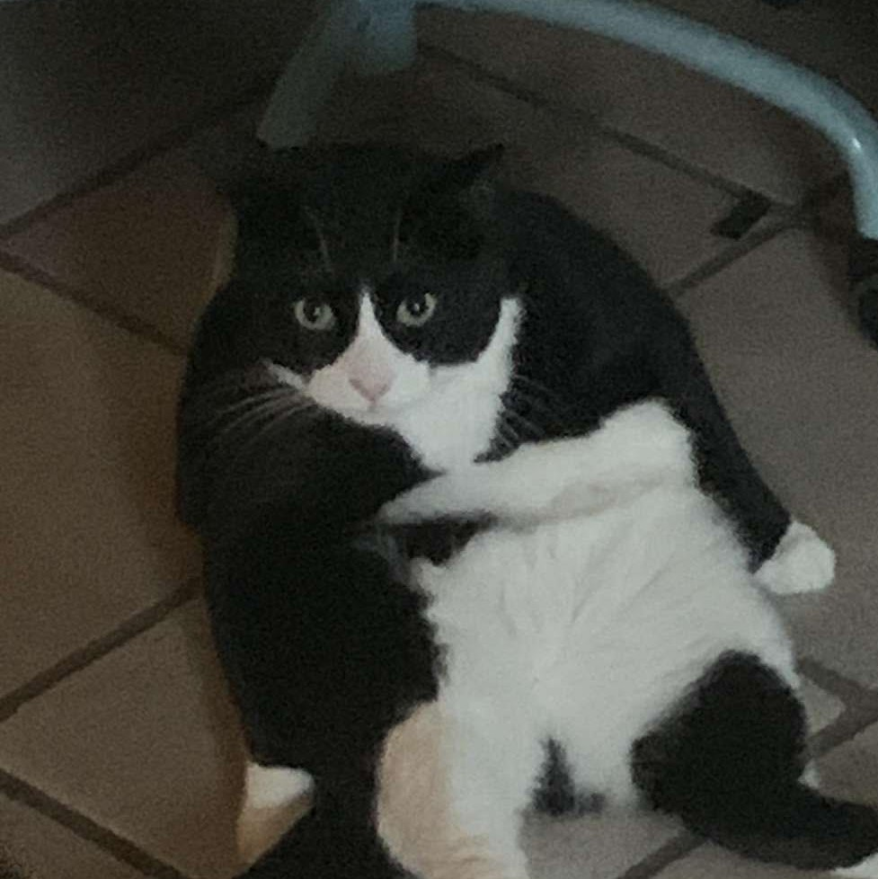

Jacob Boettcher
| Images |
Videos |
Audio |
|
|
|
|
|
|
|  |
|
|
 |
|
|
Sources:
- Videos:
- https://mixkit.co/free-stock-video/man-playing-guitar-in-the-dark-42845/
- https://mixkit.co/free-stock-video/statue-on-the-rocks-4063/
- https://mixkit.co/free-stock-video/a-couple-of-cats-in-the-snow-9949/
- https://mixkit.co/free-stock-video/white-cat-lying-among-the-grasses-seen-up-close-22732/
Audios:
- https://mixkit.co/free-sound-effects/guitar/
- https://mixkit.co/free-sound-effects/rain/
- https://mixkit.co/free-sound-effects/cat/
Images:
- https://www.google.com/search?q=gradient+background+stock&rlz=1C1GCEA_enUS1021US1021&source=lnms&tbm=isch&sa=X&ved=2ahUKEwiC3JLj-9_6AhWMFzQIHXCIACkQ_AUoAXoECAIQAw&biw=1440&bih=789&dpr=1&surl=1&tbs=il:cl&safe=active&ssui=on#imgrc=MoNoTDzieYceqM